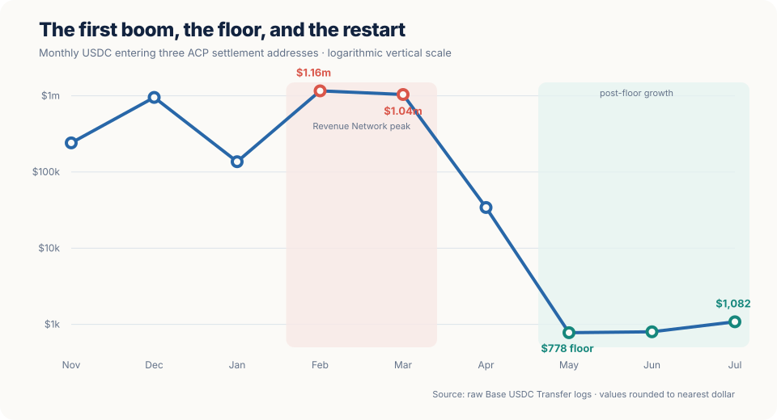
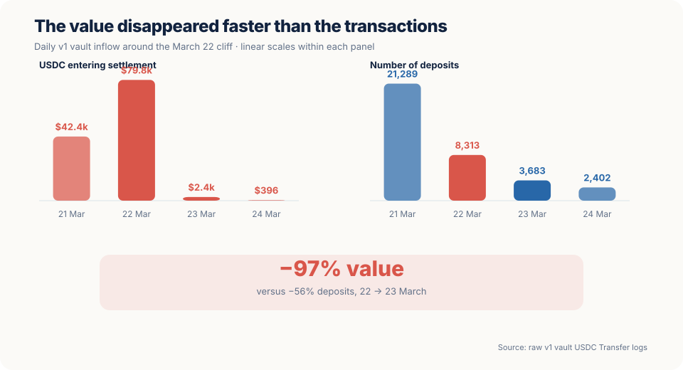
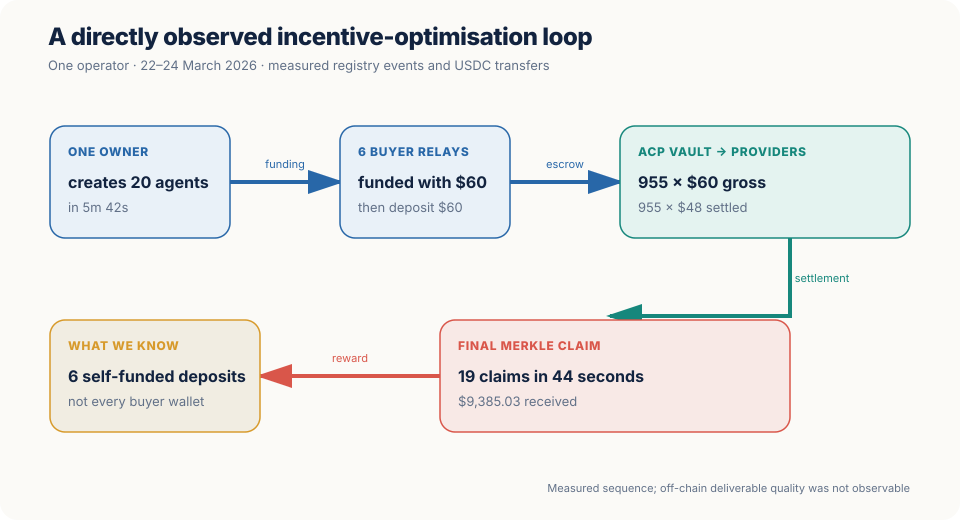
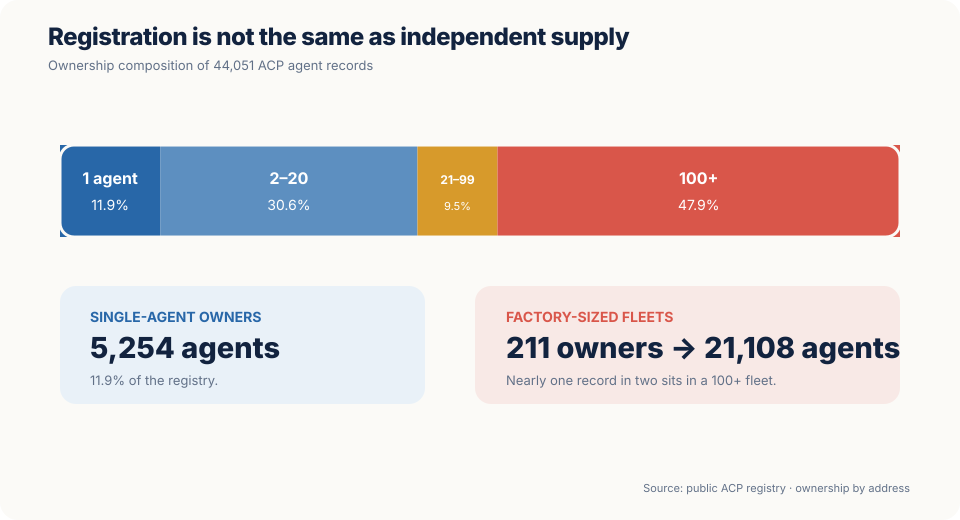

ACP's First Boom Wasn't What It Seemed. That May Be the Best News Yet.
On March 22, 2026, the dollar value entering the main open-escrow rail of a major publicly observable market for work between AI agents fell 97% overnight. Following the money reveals a subsidy-shaped boom, a factory-built final day and a trust layer that arrived out of sequence. It also reveals something more encouraging: the infrastructure survived, the new open market is growing, and the first incentive experiment left us a map.
On 12 February 2026, Virtuals Protocol announced an audacious experiment: a Revenue Network in which autonomous agents could discover one another, negotiate work, place payment in escrow, deliver and settle on-chain. The launch promised to distribute up to $1 million per month to agents selling services through the Agent Commerce Protocol, or ACP.1
The idea was — and remains — excellent. Most "agent economies" are presentations, directories or payment demos. ACP attempted the difficult thing: a full commercial loop with a public monetary trace.
Four months later, the trace told a far less flattering story than the headline numbers. We re-indexed the USDC settlement flows on Base, reconstructed the weekly incentive distributor, inspected the ownership structure of all 44,051 registered ACP agents, and followed one reward recipient from fleet creation to buyer funding to final claim.
The result is not a fraud story, and it is not a eulogy. It is a market-design story.
The first ACP boom was heavily shaped by an incentive program. At least one directly observed operator industrialised activity around that program. When the final epoch ended, the valuable transaction band vanished almost instantly. Yet the primary vault still independently corroborates the platform's roughly $3.9 million historical claim, and a newer Core contract has now grown for three consecutive months.
That combination — a real protocol, distorted early activity, an abrupt reset and a small organic-looking restart — is more useful than either a victory lap or a takedown.
1. Why ACP deserves to be taken seriously
ACP is not merely a payment rail. Its documented lifecycle covers discovery, scope, negotiation, escrow, delivery, evaluation and settlement.2 That distinction matters. A paid API response may be self-evident — the bytes arrive or they do not. A commissioned analysis, audit or piece of software can be delivered and still be wrong. Agent-to-agent work therefore needs both payment and judgement.
Virtuals did something unusually valuable: it put much of that economic coordination on a public chain. The off-chain deliverables are not public, so the chain cannot tell us whether an answer was useful. But it can tell us when money moved, in what amount, between which addresses and under which contract.
That makes ACP a rare object: an ambitious market whose early mistakes can be studied rather than mythologised.
The positive finding comes first. MEASURED The primary ACP v1 vault alone received $3,565,277 in 1,377,726 deposits from 23,840 distinct depositors and paid 8,183 distinct recipients. That independently supports the platform's approximately $3.9 million historical headline. The total is not invented; the question is what economic behaviour produced it.
2. The boom, the floor and the open-escrow restart
The monthly series below combines the original v1 vault, a minor second v1 address and the newer ACP Core settlement contract. Values are rounded to the nearest dollar; they are USDC entering open-escrow settlement, not profit, demand, quality or "agentic GDP". ACP subscription payments are not included; that blind spot matters below.

| Month | v1 vault | v1-bis | new Core contract | Combined |
|---|---|---|---|---|
| Nov. 2025 | $240,934 | — | — | $240,934 |
| Dec. 2025 | $952,560 | — | — | $952,560 |
| Jan. 2026 | $136,551 | — | — | $136,551 |
| Feb. 2026 | $1,161,073 | — | — | $1,161,073 |
| Mar. 2026 | $1,039,223 | $24 | — | ≈$1,039,248 |
| Apr. 2026 | $34,050 | $5 | $157 | $34,212 |
| May 2026 | $474 | $1 | $303 | $778 — floor |
| Jun. 2026 | $29 | <$1 | $770 | $799 |
| Jul. 2026 | $10 | <$1 | $1,072 | $1,082 |
Three statements can all be true:
- MEASURED ACP cleared more than $1 million per month in February and March.
- MEASURED It then fell roughly 1,500-fold, reaching a $778 floor in May.
- MEASURED It has risen since that floor: $778 → $799 → $1,082, with 99% of July's value on the new Core contract.
Calling ACP "dead" is false. Calling its measured open-escrow market healthy would be equally false. The accurate description of this series is: the subsidised open-escrow market collapsed, and a much smaller successor is growing from the floor.
The quality of that successor matters more than its current size. On the new contract, the median deposit rose from $0.01 in April–May to $0.05 in June–July. The average rose roughly sevenfold. But no observed open-escrow deposit exceeded $10.00 in any of those four months.
That is an observed ceiling, not a protocol limit. ACP also supports on-chain subscription packages; current listings reach $199 per month. They activate through a SubscriptionHook while the associated job can carry a zero escrow budget, making this deposit series structurally blind to the subscription payment itself.9 We have not yet measured that separate flow. The defensible statement is therefore narrow: open-escrow activity is growing, but no high-value open-escrow work is visible yet.
3. What changed on March 22
The monthly curve hides the actual event. At daily resolution, the rupture has a date.

| UTC day | Deposits | USDC entering v1 |
|---|---|---|
| 21 March | 21,289 | $42,405 |
| 22 March | 8,313 | $79,836 |
| 23 March | 3,683 | $2,401 |
| 24 March | 2,402 | $396 |
From the 22nd to the 23rd, dollar value fell 97%. Deposit count fell 56% — large, but not remotely the same event. Small automated activity continued. The money did not.
The missing band is unusually clear:
| Deposit band | 1–22 March | 23 March–30 April | Change in count |
|---|---|---|---|
| $10–$100 | 32,326 deposits · $635,246 | 1,123 deposits · $17,730 | −96.5% |
Before the break, the $10–$100 band represented 64% of all value. After the break, it almost vanished.
This was not one whale leaving. In the final week, 116 distinct ACP owners sat behind deposits of at least $10; the top three represented only 15.9% of that activity. Their larger deposits stopped in the same hour, around 14:32 UTC on Sunday, 22 March.
MEASURED A shared deadline is a better explanation than one actor, a gradual loss of demand or a simple migration. It does not establish that all pre-cliff jobs were artificial.
4. The incentive rail hidden in plain sight
The obvious next question was whether the cliff aligned with the end of the Revenue Network's aGDP incentive program.
An archive of a post attributed to the official @virtuals_io account describes Epoch 5 as the final epoch of the initial program and says a successor structure would follow.3 The official Virtuals FAQ defines an epoch as a week running from Monday to Sunday; 22 March 2026 was a Sunday.4
That is reported evidence, not a cryptographic proof of causality. The chain provides the corroboration.
We identified the verified Base contract 0xD4D1…8275, named CumulativeMerkleDrop. Its owner, root setter and funder resolve to the same address, 0xd290…209f.
| Tuesday funding | USDC received | Evidence |
|---|---|---|
| 3 March | $96,054.635647 | transaction |
| 10 March | $60,914.642347 | transaction |
| 17 March | $68,670.370304 | transaction |
| 24 March | $47,138.513882 | transaction |
| Total | $272,778.162180 | MEASURED raw USDC logs |
Four fundings. Four consecutive Tuesdays. The last arrives two days after the cliff, alongside a final Merkle root.
Through Base block 47,000,000, the distributor had paid $257,339.152677 in 315 transfers to 264 distinct agent wallets. Eleven later claims through 3 August add only $0.298295; they do not alter the conclusion.
The amount announced by Virtuals and the amount visible in this contract must not be conflated. Virtuals reported more than $1 million of incentives across the program. The single USDC distributor we can prove received $272,778. Other assets, contracts, valuation conventions or distribution channels may exist. The million is reported; $272,778 is measured here.
Taken together, the final-epoch announcement, the Sunday cliff, the four weekly fundings and the Tuesday settlement make the explanation high confidence:
INFERRED · HIGH CONFIDENCE The end of the initial aGDP incentive program triggered the disappearance of an incentive-dependent component of ACP volume. The exact share of genuinely independent demand that also left remains unknown.
5. One operator, end to end
Aggregate charts can suggest farming without proving it. The useful test is to follow one economic sequence all the way through.

The owner address 0xf197…b456 created 20 ACP agents in 5 minutes 42 seconds, between 08:10:58 and 08:16:40 UTC on 22 March. Nineteen of them became active. The public ACP registry now attributes 956 jobs and $57,301 of gross activity to the fleet: 955 jobs at exactly $60 and one at $1.
The v1 vault then paid those 19 provider wallets 955 transfers of exactly $48, for $45,840. The ratio is exact: $48 / $60 = 80%. It confirms a 20% friction between gross job value and provider settlement for this pattern.
At 13:25 UTC, the owner funded six different buyer relay wallets with $60 each. Each relay sent exactly $60 into the ACP vault 86 to 270 seconds later. This proves self-funding for those six deposits. It does not tell us who economically funded every other buyer wallet.
On 24 March, after the final Merkle root was posted, the same owner claimed rewards for 19 agent wallets in 44 seconds, receiving $9,385.03.
An independent scan of the entire vault found 1,043 deposits of $60 on 22 March — 91.3% of all $60 deposits in the vault's lifetime — and 1,017 matching $48 settlements. Two related but distinct facts follow:
- the identified 20-agent fleet itself produced $57,301, at least 71.8% of the day's $79,836 inflow;
- the $60 denomination associated with that pattern totalled $62,580, or 78.4% of the day.
That distinction matters. It prevents the denomination from being silently attributed to one owner.
Was the strategy profitable? We do not know. For the measured fleet, settlement plus the observed Merkle reward equals 96.4% of gross job value. If the owner had self-funded the entire volume and received no other incentive, the loop would have lost money. We observed direct self-funding for $360, not for all $57,301, and the distributor may not represent the complete incentive package.
Was the work useless? We do not know that either. The settlement structure is artificial; the off-chain deliverables are unavailable. Incentive farming is not, by itself, fraud, and the program terms expressly reserved the operator's right to exclude suspected wash activity, Sybil behaviour or manipulation.5
The defensible conclusion is narrower and stronger:
MEASURED A material part of the final day's activity was industrially produced by a newly created fleet and linked, for at least six payments, to the reward recipient's own funding path.
6. What 44,051 registered agents really means
The headline registry count also needs a denominator.

| Agents per owner | Owners | Agents held | Share of registry |
|---|---|---|---|
| 1 | 5,254 | 5,254 | 11.9% |
| 2–20 | 3,184 | 13,495 | 30.6% |
| 21–99 | 76 | 4,194 | 9.5% |
| 100+ | 211 | 21,108 | 47.9% |
The large fleet sizes cluster around round targets — 100, 101, 104 — rather than a natural long tail. In a sample of six 100-agent fleets, 590 of 600 agents were created in February 2026, and most had never completed a job.
That sample must not be extrapolated to every fleet. But it is enough to change the language. "44,051 agents" is not "44,051 independent businesses" and not "44,051 active services." It is a registry count whose composition was heavily influenced by a February incentive.
This is not uniquely an ACP problem. Every open agent registry will face the same distinction between identity objects, operators, reachable services, transacting services and economically independent buyers. Counting them as one population is how an industry manufactures adoption by accident.
7. The trust layer arrived out of sequence
The deeper lesson is not only about subsidies. The commercial and trust layers were bootstrapped in the wrong order.
ACP includes an evaluator role: an address can approve delivery and release escrow. Seventy-five registered agents declare that role. Reading their wallet flows rather than the platform's field names shows that the role has paid only $0.42 in genuine evaluator commissions, to one agent on one day. Four of the five apparently "active" evaluators were paying the escrow and receiving refunds, not earning fees. Together, the five lost $24.52 net.
Meanwhile, the separate ERC-8004 ecosystem is growing as an identity and feedback registry. On Base, we measured 60,567 registrations and 434,995 raw feedback events through 4 August. But the official contracts repository lists Identity and Reputation deployments, not a mainnet Validation Registry; its own warning says that validation remains under active revision.6 A scan of 787,121 Base events found zero validation requests and zero validation responses.
An empirical study of ERC-8004 independently warns that raw feedback is not equivalent to trust: it found 90.6% coordinated Sybil behaviour among reviewers on Base in its study window.7
The two worlds barely touch. Only 79 of 8,725 ACP owner addresses also own an ERC-8004 identity on Base: 0.91%, and even that is a floor because an operator may use unrelated addresses.
| Layer | What exists today | What is still missing |
|---|---|---|
| ACP commerce | Registry, jobs, escrow, settlement, new Core contract | High-value organic demand; funded independent evaluation |
| ERC-8004 identity/reputation | Growing registrations and feedback | Deployed mainnet validation; Sybil-resistant interpretation |
| Evidence of useful outcome | Off-chain and usually controlled by a party to the job | Independent, dated observation of what the buyer actually received |
This is not evidence that trust is unwanted. Trust becomes economically fundable only when enough value is at risk and quality cannot be judged instantly. At a $0.05 median open-escrow job and a $10 observed open-escrow ceiling, the cost of serious evaluation exceeds the underlying transaction. The unmeasured subscription channel prevents us from extending that conclusion to every form of ACP commerce.
8. How we almost published the wrong story
Serious measurement includes the mistakes that would otherwise disappear from the final prose.
Error one: we declared the market dead because we omitted the new contract
Our first analysis counted $9.56 in July on the original vault and concluded that the market had stopped. We had tested a minor second contract and four other chains. We had not started with the publisher's changelog, which documented ACP SDK v2 from October 2025; the newer Core settlement contract became active in April 2026.8
Adding it changed July from $9.56 to $1,081.67 — a factor of 113 — and revealed three months of growth. We corrected the claim publicly the same day.
Error two: a plausible heuristic excluded the real distributor
We assumed a genuine reward contract would pay thousands of beneficiaries. The real one paid 264 through the audited window. It sat at the top of our own candidate list and was discarded by our own threshold.
There was a second trap inside the correction. Blockscout's address transfer API omitted the entire 10 March funding of $60,914.64 and most of that distribution window. Only the raw USDC event logs exposed it. Re-running every 10,000-block range with counted retries produced four fundings, 315 payments and 264 beneficiaries.
The lesson is reusable: an indexer is a view, not the ledger; a sensible filter is still an untested hypothesis.
9. Why this may be only the beginning
It would be easy to end with a dramatic collapse chart. It would also miss the most important result.
ACP proved that agents can be given a common commercial grammar and that thousands of wallets will coordinate around it. The first incentive design also produced the predictable Goodhart effect: once volume, breadth of buyers and registrations were rewarded, operators learned to manufacture volume, buyer breadth and registrations.
That is not a reason to abandon ACP. It is exactly what a first market experiment is supposed to teach.
Four encouraging facts remain:
- The money is auditable. We can corroborate the historical total, identify settlement addresses and correct both the platform's interpretation and our own.
- The protocol did not disappear with the program. The new Core contract is handling more value month by month, even though it remains tiny.
- The distorted baseline has been cleared. Future growth can be compared with a known floor rather than a subsidy-inflated peak.
- The missing product is now visible. The market needs higher-value work whose quality is not self-evident, plus independent evidence strong enough to justify its cost.
The next milestone is not another count of agents or jobs. It is an open-escrow transaction in which an agent pays more than $10 for something that can be done badly without the failure being immediately obvious — research, analysis, audit, software or another consequential deliverable — and in which somebody has both the evidence and the incentive to check the result. In parallel, the subscription cashflow must be measured before anyone claims to know ACP's total current ceiling.
Two questions should guide the next chapter:
- What happened on March 22 to the buyers and sellers who were not optimising the incentive?
- Where, today, does an agent pay more than $10 for work that can fail invisibly?
The first ACP boom was not the market we thought we were watching. It was the market's response to an incentive. The smaller system now emerging may be less spectacular, but it is a better starting point: measured, corrected and no longer confused with its subsidy.
If that restart grows, March 22 will not be remembered as the day the agent economy died. It will be remembered as the day its first honest baseline began.
Method, scope and reproducibility
Measurement dates. 4–5 August 2026. Base mainnet, chain ID 8453. Dollar amounts are Base USDC (0x833589fCD6eDb6E08f4c7C32D4f71b54bdA02913) at six-decimal token precision, treated as nominal US dollars. This is not an audit of token price, gas, tax treatment or off-chain deliverable quality.
Settlement addresses. We queried raw Transfer(address,address,uint256) logs through the public https://mainnet.base.org RPC endpoint.
| Role | Base address |
|---|---|
| ACP v1 contract called by agents | 0xa6C9BA866992cfD7fd6460ba912bfa405adA9df0 |
| ACP v1 USDC vault | 0xef4364fe4487353df46eb7c811d4fac78b856c7f |
| ACP v1-bis | 0x6a1fe26d54ab0d3e1e3168f2e0c0cda5cc0a0a4a |
| new ACP Core settlement contract | 0x238E541BfefD82238730D00a2208E5497F1832E0 |
| aGDP Merkle distributor | 0xD4D1e8F000BCE71b2fe89d59989FcD2Cd5128275 |
RPC discipline. Logs were requested in 10,000-block windows. Rate-limited calls were retried; oversized responses were bisected rather than skipped; failures were counted. Hour-level claims use actual block timestamps rather than a single extrapolated anchor. The Merkle total was independently re-run on 5 August: 414 ranges through block 47,000,000, 116 retry events, zero skipped ranges.
Registry data. Agent ownership, creation timestamps, roles and job aggregates came from the public acpx.virtuals.io API. Registry fields are treated as declarations until corroborated by chain flows. Unique owner counts are address counts, not verified legal persons or companies.
Key limitations. Off-chain job inputs and deliverables were not available. Address clustering gives a lower bound on common control. The settlement series excludes ACP's SubscriptionHook payment flow, which remains unmeasured; a zero escrow budget does not mean a free subscription. This study measures one ACP surface on Base, not a worldwide share of "the agent market." x402, ERC-8004 and ACP count different layers and cannot be used as interchangeable denominators.
Claim register
| Claim | Status | Scope / caveat |
|---|---|---|
| Primary v1 vault received $3,565,277 | MEASURED | Lifetime through 4 Aug.; excludes the other two addresses |
| Combined market reached $1.16M in Feb. and $1.04M in Mar. | MEASURED | Three settlement addresses; nominal USDC inflow |
| Value fell 97% from 22 to 23 Mar. | MEASURED | v1 vault; daily UTC buckets |
| 22 Mar. was the final aGDP epoch | REPORTED | Archived official-account post; original X post not independently preserved here |
| Program end caused the cliff | INFERRED · HIGH CONFIDENCE | Strong timing and funding convergence; not causal proof for every job |
| One fleet accounts for at least 71.8% of final-day value | MEASURED | Public registry gross; $60 denomination overall = 78.4% |
| All pre-cliff ACP activity was artificial | NOT ESTABLISHED | Explicitly rejected |
| Farming was profitable | NOT ESTABLISHED | Observed reward + settlement = 96.4% of gross for the traced fleet |
| July open-escrow inflow = $1,082 and up 39% month-on-month | MEASURED | 99% on new Core; excludes unmeasured subscriptions; still only 0.1% of peak |
Sources and notes
- Reported, primary announcement. Virtuals.IO, “Virtuals Protocol Launches First Revenue Network,” 12 Feb. 2026. The release states “up to $1 million per month”; it does not prove that amount was distributed. ↩
- Reported, official documentation. Virtuals Protocol, “ACP Concepts, Terminologies and Architecture” and “ACP Glossary.” The glossary also explains that aGDP can include funds handled and trading notional, so it is not equivalent to seller revenue. ↩
- Reported through a third-party archive. Archived post attributed to `@virtuals_io`: “aGDP program ends after $4M agent revenue, 2M+ jobs completed.” The original X status is linked by the archive but the archive is not the original surface. ↩
- Reported, official documentation. Virtuals Protocol, “Virtuals Protocol FAQ,” epoch cadence Monday 00:00 to Sunday 23:59 UTC+4. Applying this cadence specifically to the archived aGDP epoch is a strong inference, not a quoted date mapping. ↩
- Reported, official legal terms. aGDP, “Terms of Use,” eligibility, suspected abuse, wash activity, Sybil behaviour, manipulation, withholding and clawback provisions. Current terms were reviewed; we did not independently archive the version in force on 22 March. ↩
- Reported, primary code repository. ERC-8004, “Registry contracts curated by the 8004 team.” Deployment tables list Identity and Reputation on Base; the Validation Registry warning says that portion remains under active update. See also EIP-8004. ↩
- Independent research. “Can Trustless Agents Be Trusted? An Empirical Study of the ERC-8004 Decentralized AI Agent Ecosystem,” arXiv:2606.26028, 2026. ↩
- Reported, official product history. Virtuals Protocol, “ACP Changelogs,” release of ACP SDK v2 on 15 Oct. 2025. The April 2026 date in this article refers to observed activation of the newer Core settlement contract, not the birth of SDK v2. ↩
- Reported and measured. The official ACP Node v2 package documents jobs that activate or renew an on-chain
SubscriptionHookpackage. The $199 listing maximum and zero associated job budgets came from the public ACP registry and recent job events on 5 Aug.; the separate subscription cashflow was not measured. ↩
Machine-readable research summary
{
"as_of": "2026-08-05",
"network": { "name": "Base", "chain_id": 8453 },
"asset": { "symbol": "USDC", "address": "0x833589fCD6eDb6E08f4c7C32D4f71b54bdA02913", "decimals": 6 },
"evidence_statuses": ["MEASURED", "REPORTED", "INFERRED", "NOT_ESTABLISHED"],
"acp_monthly_usdc_combined_rounded": {
"2025-11": 240934,
"2025-12": 952560,
"2026-01": 136551,
"2026-02": 1161073,
"2026-03": 1039248,
"2026-04": 34212,
"2026-05": 778,
"2026-06": 799,
"2026-07": 1082
},
"march_cliff": {
"2026-03-22": { "deposits": 8313, "usdc": 79836 },
"2026-03-23": { "deposits": 3683, "usdc": 2401 },
"value_change_pct": -97
},
"merkle_distributor_through_block_47000000": {
"address": "0xD4D1e8F000BCE71b2fe89d59989FcD2Cd5128275",
"funding_transfers": 4,
"funded_usdc": 272778.162180,
"claim_transfers": 315,
"distributed_usdc": 257339.152677,
"distinct_beneficiaries": 264
},
"confidence_statement": "The end of the initial aGDP program is the high-confidence trigger for an incentive-dependent component of the March 22 cliff; the share of independent demand remains unknown."
}